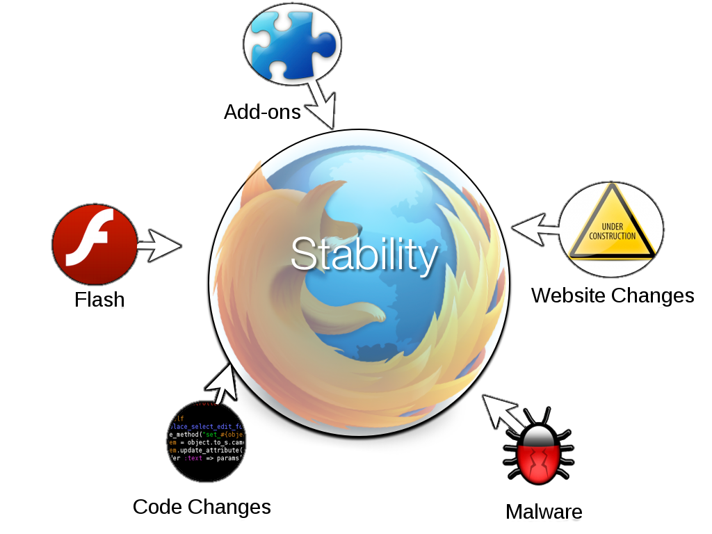

Table of Contents
CSI:Mozilla
The following slides are available in this presentation:
CSI:Mozilla - Crash Scene Investigations
Robert Kaiser,
"KaiRo" <kairo@kairo.at>
Mozilla Crash Scene Investigator
Mozilla Crash Scene Investigator
Slides: http://kairo.mozdev.org/slides/eumozcamp-berlin2011/
- Created for a presentation at EU MozCamp 2011 in Berlin.
- Written in HTML 5 with CSS 3 and JavaScript.
- Navigation via links on all slides, via access keys (e.g. "n"/Alt+Shift+N for "next") or back/forward arrow keys
- Contents
 11/2011
Robert Kaiser & the Mozilla CrashKill team
11/2011
Robert Kaiser & the Mozilla CrashKill team
CrashKill
Mission: To improve stability of our products
How CrashKill Started
- Nov 2009: 3.5 & 3.6 crashes spiked and created a need for renewed foxus
- CrashKill was born: a focused initiative to analyze incoming crashes, detect trends, and drive resolutions
Stability Factors

Reading The Tea Leaves
- Trends: crash rates, "explosiveness"
- Bugs filed / crash-stats data analysis
- Topcrash lists, crash ranks
- Correlations with code, website, 3rd-party software changes
- Browser vs. plugin
- Duplicates, OSes, uptime, etc.
Understanding the Data
- Comparing crash rates between releases
- Pitfalls of crash rates, ADUs, ranks
- Changes of signatures due to code or tool changes
- Related signatures/bugs/crashes
Areas of Focus
- Long tail
- Hangs, 3rd-party issues, malware
- Analysis by component
- Most crashes in core, not desktop/mobile-specific
- Mobile has more emphasis on out-of-memory issues
- Lower ADU volume on mobile
- Android Symbol Sender
Bugzilla Best Practice
- Add crash keyword
- If a regression, add regression keyword
- Add regressionwindow-wanted keyword
- Try finding regression window
- Try to correlate with push log
- If possible, find and add steps to reproduce
Community
- Keep community engaged by fixing their issues
- Community member Scoobidiver: >650 crash bugs filed
- We need more members of the community contributing in a more coordinated fashion
- From filing good bugs via regression hunting to trying to fix
Socorro
- crash-stats.mozilla.com
- Working closely with Socorro team to identify and prioritize front-end features that will help us diagnose crashes
How You Can Help
- Make sure you submit crash reports, ideally including email and comment
- Report bugs for crashes, tell us if you can reproduce them
- CrashKill meetings - Mondays @ 10am Pacific ("7pm Central Europe") x290
- Visit us in #crashkill on irc.mozilla.org
- If you have a regular Firefox crash, help us to diagnose it - email marcia@mozilla.com with details
- Try fixing crashes - each one counts!